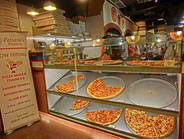

Build Your Own 2048!
Build Your Own 2048!I made my own version of 2048. How cool is that!?
 Website Performance Optimization
Website Performance OptimizationHey... this class looks familiar.
 Mobile Web Development
Mobile Web DevelopmentMaking mobile apps isn't so hard after all.
-  Cam's Pizzeria
Who wants a performant pizza?

Cameron Pittman
Course Developer